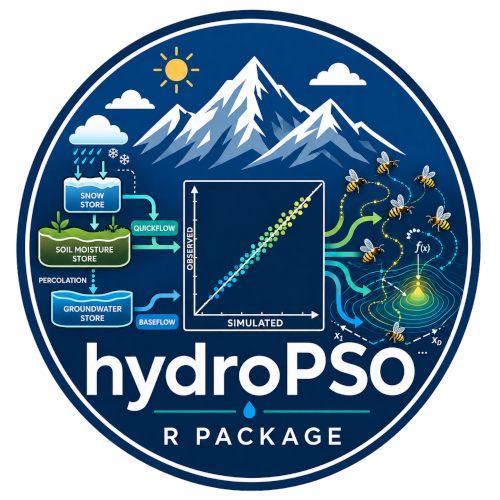
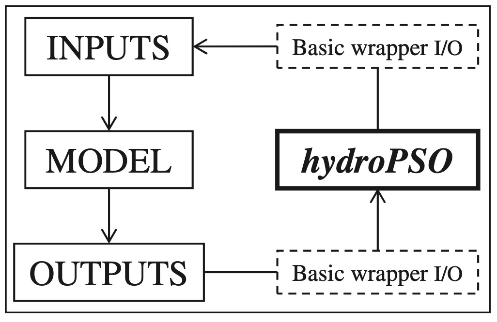
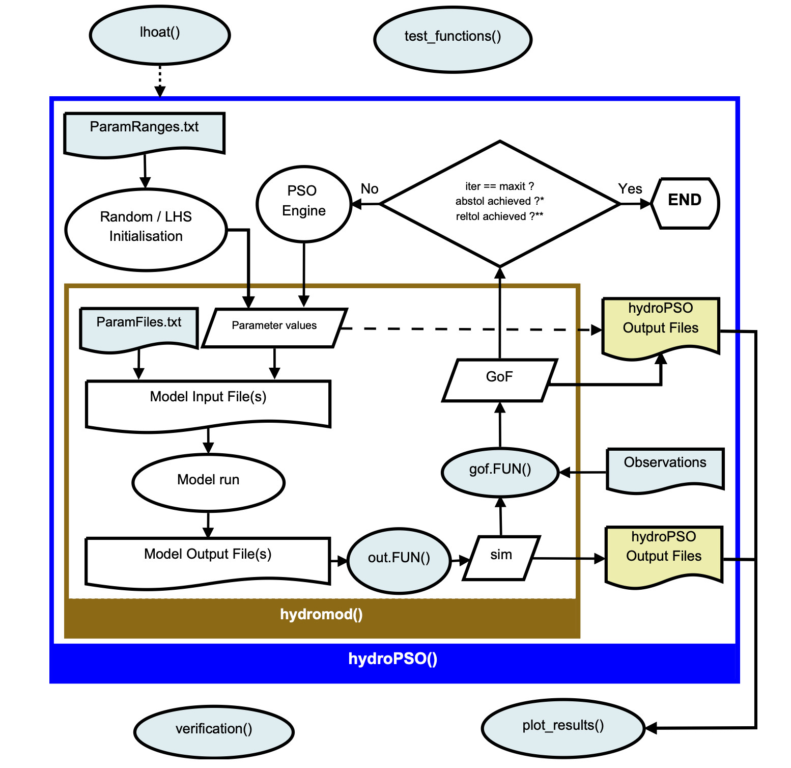

DESCRIPTION

hydroPSO is an R package for global optimisation, parameter calibration, and model evaluation using advanced variants of Particle Swarm Optimisation (PSO).
It was built for scientists and practitioners working with hydrology, hydrometeorology, ecology, groundwater, environmental engineering, and natural resources systems; especially when calibration is difficult, parameter spaces are large, and model runs are computationally expensive.
Unlike optimisation tools tied to a single model, hydroPSO is model-independent. You can connect it to:
- models written in R
- external models executed from the system console
- workflows driven by input and output files
- legacy simulation tools whose source code you do not want to modify
That makes hydroPSO a practical calibration engine for real-world environmental modelling, where reproducibility, transparency, and flexibility matter as much as optimisation performance.
hydroPSO only needs to know which model parameters need to be calibrated, where they need to be written, and from where and how to read the main model outputs (see Fig. 1). The calibration engine of hydroPSO communicates with any model through simple ASCII files and/or R wrapper functions, which read model inputs and outputs, and compute the model’s performance.

Figure 2 below shows the interaction among the main functions comprising the hydroPSO package.

Why hydroPSO?
Environmental models are rarely easy to calibrate.
They are often non-linear, non-smooth, and computationally demanding. Their parameters can interact in ways that make local optimisation unreliable or unstable. hydroPSO was designed for exactly that kind of problem.
Key hydroPSO capabilities
- State-of-the-art PSO variants, including support for SPSO-2011 and SPSO-2007
- Model-independent architecture, for both R-based and externally executed models
- Parallel computing support to reduce runtime for expensive calibration tasks
- Sensitivity analysis tools to diagnose parameter influence
- Graphical summaries and diagnostics to interpret optimisation behaviour and results
- Fine control over PSO settings and search behaviour
- Reproducible workflow suited to research, teaching, and applied environmental modelling
Who is hydroPSO for?
hydroPSO is especially useful for researchers and practitioners in:
- Hydrology
- Hydrometeorology
- Groundwater modelling
- Ecohydrology
- Catchment and watershed modelling
- Water resources
- Environmental engineering
- Natural resources assessment
- Several other fields …
Typical use cases include:
- calibrating rainfall–runoff models
- tuning groundwater and solute transport models
- fitting distributed or semi-distributed environmental models
- running sensitivity and verification analyses
- comparing objective functions and calibration strategies
- building reproducible calibration workflows for publications and decision support
Why model independence matters
Many environmental scientists work with legacy or third-party codes. Rewriting those models just to enable calibration is slow, risky, and often unrealistic.
hydroPSO avoids that bottleneck.
You can keep your model as it is and use hydroPSO as the optimisation layer around it. The package communicates with external models through their own input and output files, so calibration can be added without changing the model’s internal code.
That makes hydroPSO attractive for workflows built on established tools in hydrology, hydrometeorology, groundwater, ecology, and natural resources modelling.
Where hydroPSO has been used
hydroPSO has been used in studies involving models and applications such as:
- SWAT
- LISFLOOD
- MODFLOW / MT3DMS
- GR4J
- TUWmodel
- groundwater transport modelling
- flood forecasting
- soil moisture and evapotranspiration studies
- eco-environmental and broader optimisation problems
- several other non-environmental and non-hydrological models
This track record makes hydroPSO relevant not only for hydrology, but also for the wider environmental modelling community.
A non-exhaustive list of articles using hydroPSO is the following:
Installation
Install the development version from GitHub
if (!requireNamespace("remotes", quietly = TRUE)) {
install.packages("remotes")
}
remotes::install_github("hzambran/hydroPSO")Archived CRAN release
hydroPSO was removed from CRAN on 2023-10-16 because it depends on the archived packages hydroTSM and hydroGOF. Previous releases are still available from the CRAN archive.
install.packages(
"https://cran.r-project.org/src/contrib/Archive/hydroPSO/hydroPSO_0.5-1.tar.gz",
repos = NULL,
type = "source"
)Note If installation fails, install archived dependencies first and then reinstall hydroPSO.
Quick workflow
A typical hydroPSO workflow looks like this:
- Define the parameters to calibrate and their bounds
- Run your model from R or call an external executable
- Compute an objective function from simulated versus observed values
- Let hydroPSO search the parameter space
- Inspect diagnostics, sensitivity, and plots
- Validate or verify the calibrated parameter sets
At a high level, hydroPSO sits between your model and your evaluation metric:
Parameter set -> model run -> model outputs -> objective function -> PSO updateVignettes and examples
hydroPSO includes or links to worked examples for widely used environmental models, including:
- GR4J
- TUWmodel
- SWAT-2005
- MODFLOW-2005
These examples are useful starting points if you want to adapt hydroPSO to your own calibration workflow.
Citation
If you use hydroPSO in research, please cite both the software and the main methods paper.
Main article
Zambrano-Bigiarini, M. and Rojas, R. (2013). A model-independent Particle Swarm Optimisation software for model calibration. Environmental Modelling & Software, 43, 5–25. https://doi.org/10.1016/j.envsoft.2013.01.004
Package citation
Zambrano-Bigiarini, M. and Rojas, R. (2026). hydroPSO: Particle Swarm Optimisation, with Focus on Environmental Models. R package version 0.6-0. doi:10.32614/CRAN.package.hydroPSO. https://doi.org/10.32614/CRAN.package.hydroPSO
In R:
citation("hydroPSO")Related packages
If your workflow also needs hydrological goodness-of-fit metrics or time-series utilities, see:
- hydroGOF — goodness-of-fit functions for comparing simulated and observed hydrological series
- hydroTSM — time-series management, analysis, and interpolation for hydrological modelling
Reporting issues and contributing
Bug reports, questions, suggestions, and collaboration are welcome.
Please use the GitHub issue tracker to:
- report bugs
- request features
- suggest documentation improvements
- share examples from your modelling workflow
Why hydroPSO matters
hydroPSO solves a common scientific problem: how to optimise/calibrate complex environmental models without locking yourself into a single model family or rewriting code you already trust.
For hydrologists, hydrometeorologists, ecologists, groundwater researchers, and natural resources scientists, that is not a niche convenience. It is a practical requirement.
If your modelling workflow needs a transparent and flexible optimisation engine, hydroPSO is a strong foundation.